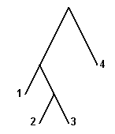
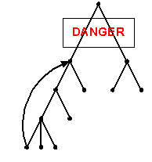

Warning: If you see this text, it means you are not viewing the page with WiBAF
Creating Complex Object Structure
When the page is accessed and an object is found on a page AHA! engine determines its presentation and scans the resulting object for more recursively included objects and so on till the end of the page (this is done in depth first order).
While designing an application with a recursive objects' structure there can appear a situation of object's self inclusion which may result in an infinite loop.
To avoid these problems AHA! restricts the size of the tree. It limits a maximum number of objects presenting in the tree to 500. When AHA! engine starts processing the page the objects' counter is set to 0. Each time AHA! finds an object the this number is increased by 1. If there is a case of infinite loop AHA! stops when the value is 500 and shows the page with all recursions to that number.
This is a very simple method for termination but this also means that even if there is no infinite loop the number of objects considered for inclusion into a page should be not more than 500. Though this is an effective way of stopping the recursion this is not the most correct one.